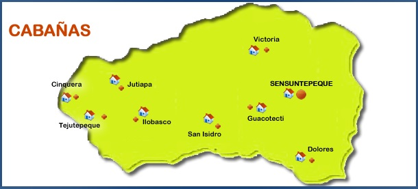

Departamento de Cabañas
Historia
Es un departamento de la zona paracentral de El Salvador. Su cabecera departamental es Sensuntepeque. Esta región tiene muchas reservas naturales. El departamento fue nombrado en honor del político centroamericanista hondureño, José Trinidad Cabañas
El Departamento salvadoreño de Cabañas está situado en el centro norte del país. Colinda al norte con el departamento de Chalatenango, al noroeste con Honduras, al este con el departamento de San Miguel, al sur con San Vicente, y al oeste con Cuscatlán. Destacan en el departamento el río Lempa (88.0 Km), los embalses del Cerrón Grande y la presa hidroeléctrica 5 de Noviembre; los cerros La Cruz (921.0 msnm) y el Ocotillo (1,014 msnm).

José Trinidad Cabañas Fiallos (Tegucigalpa, Honduras; 9 de junio de 1805 - Comayagua, Honduras; 8 de enero de 1871) fue un militar con el grado de General de División y político hondureño, electo como Séptimo Presidente constitucional del Estado de Honduras en el periodo de 1852 a 1855. Fue un defensor de las ideas unionistas de Centroamérica. Es considerado prócer y una de las personas más honradas de la historia de Honduras. Durante su periodo de presidente sostuvo que: "No se trata de fundar la República de algunos, si no la República de todos". En su estatua erigida en el Parque La Mercedes en Tegucigalpa, puede leerse: "Al heroico soldado de la unión centroamericana. Al guerrero modelo de constancia, de honradez y de valor .Al hombre que todo Honduras admira y seguirá admirando siempre."

Personajes Historicos:
Jose Trinidad Cabañas
José Trinidad Cabañas Fiallos (Tegucigalpa, Honduras; 9 de junio de 1805 - Comayagua, Honduras; 8 de enero de 1871) fue un militar con el grado de General de División y político hondureño, electo como Séptimo Presidente constitucional del Estado de Honduras en el periodo de 1852 a 1855. Fue un defensor de las ideas unionistas de Centroamérica. Es considerado prócer y una de las personas más honradas de la historia de Honduras. Durante su periodo de presidente sostuvo que: "No se trata de fundar la República de algunos, si no la República de todos". En su estatua erigida en el Parque La Mercedes en Tegucigalpa, puede leerse: "Al heroico soldado de la unión centroamericana. Al guerrero modelo de constancia, de honradez y de valor .Al hombre que todo Honduras admira y seguirá admirando siempre."